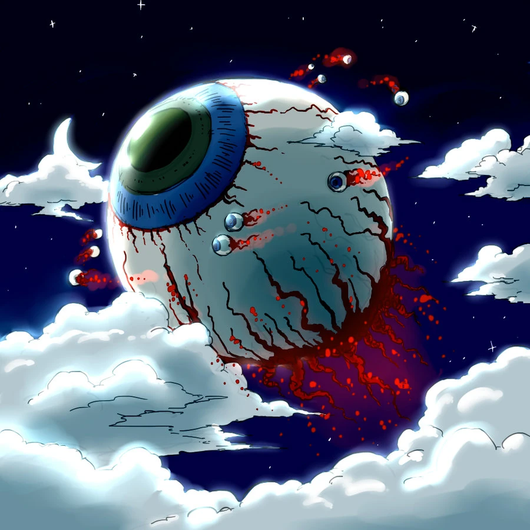
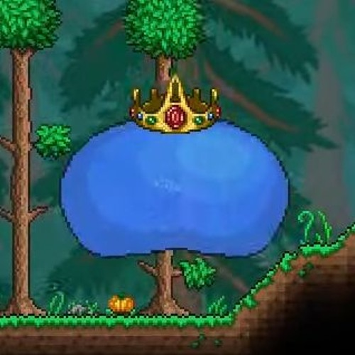
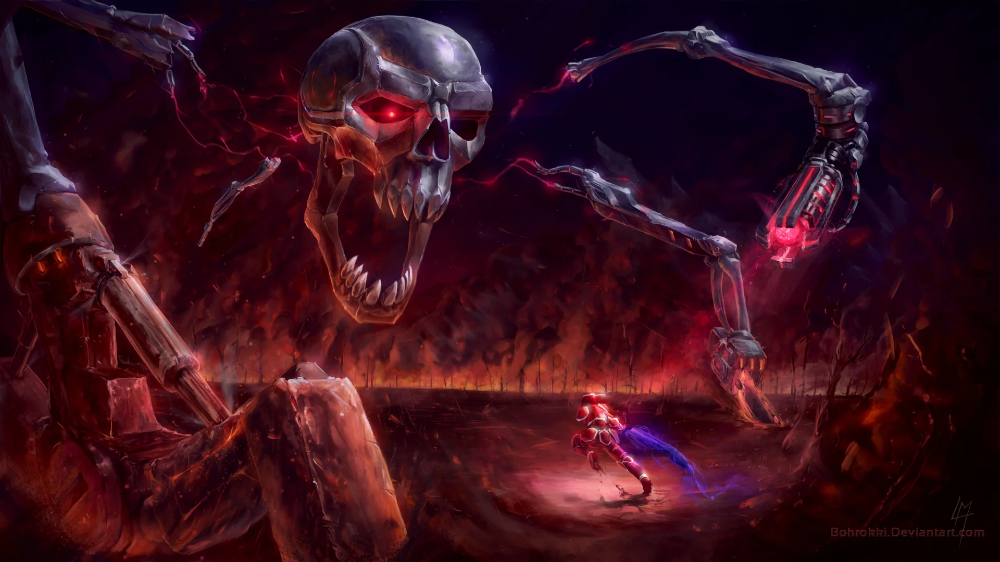

Steamson
Home
Sobre
Serviço
Contato
Chefões 

Olho de Cthulu
O olho de cthulu é um boss do jogo "Terraria". Onde pode ser spawnado usando o seu item de invocação ou passando alguns dias jogando o jogo.

King Slime
King slime é um dos primeiros chefões do Terraria, sendo o mais facil de ser derrotado. Os ataques dele consiste em pular em cima do player e invocar slimes pequenas.

Moon lord
Moon lord é o último boss do Terraria, sendo um dos mais dificeis mas também sendo um dos mais divertidos de se enfrentar.

Queen Bee
A Queen Bee é um dos chefóes mais chatos do começo do jogo, pois o seu local de invocação é bem fechado, sendo dificil de se locomover.
